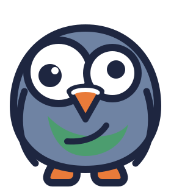

Docs e comunidade
Tudo é aberto: leia a documentação, siga o código, comunique um problema ou dê uma ajuda.
Documentação
Guias, uma página por tipo de dispositivo, regras de alerta e referência da API, em nove idiomas no Read the Docs.
Código-fonte
Apache 2.0 no GitHub: o código, as issues, o roteiro e as versões.
Contribuir
Adicionar um tipo de dispositivo, corrigir um erro, melhorar uma página: o guia de contribuição explica como começar.
Segurança
Como comunicar uma vulnerabilidade em privado e o que o projeto faz para se manter seguro.
Traduzir
As traduções fazem-se por pull request, para a interface, a documentação e este site.
Versões
Cada versão é etiquetada no GitHub, com o seu registo de alterações.
Verificações de segurança, à vista
O projeto é avaliado publicamente pela OpenSSF. Estas ligações abrem os resultados em direto.
Este site não tem análises, cookies nem pedidos a terceiros.
Código aberto, todo ele
Apache 2.0, dependências incluídas: a CI falha perante qualquer dependência que não tenha uma licença aprovada pela OSI. Nenhuma funcionalidade é retida para uma edição paga, porque não existe nenhuma.

Diz-nos o que falha
Um dispositivo que lê mal, um alerta que te acordou sem motivo, uma página que te confundiu: cada relatório melhora a próxima alfa. Pedidos de suporte para novos dispositivos também são bem-vindos.